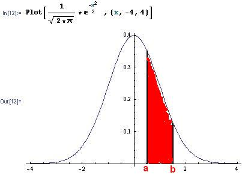

Area under the Normal Curve/Chapter 13
The Normal Curve was plotted in Mathematica:
The area under the curve from a to b, represents the probability that x lies between a and b.

A new way to show statistics (using Gapminder.org) by Hans Rosling on TED